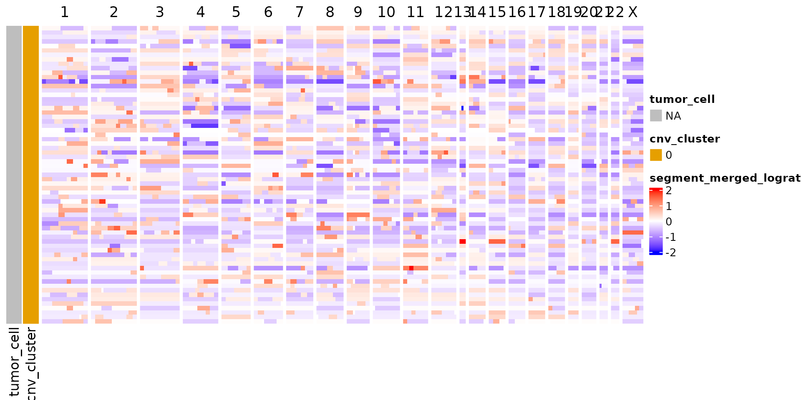
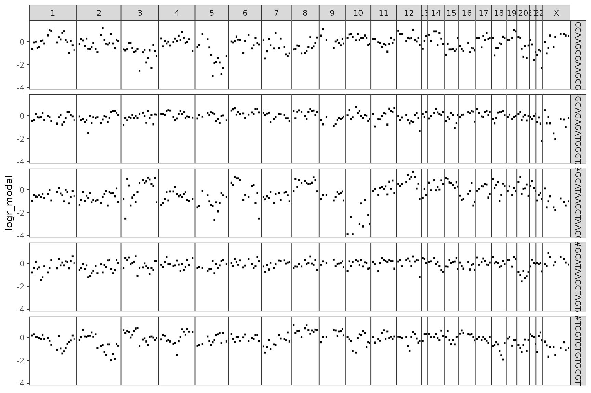

Introduction
We start by loading scatools and ArchR, as
well as the filepath to an example fragments.bed.gz file
containing fragments from 100 normal mammary cells. This bed file was
generated using the reformatFragmentFiles() function from
the ArchR package.
Note this vignette is currently set up with dummy normal data and is purely intended to demonstrate package functionality. There are no CNV changes in the test data.
Installation
You can install the development version of scatools from GitHub with:
# install.packages("devtools")
devtools::install_github("mjz1/scatools")Example
We start by loading scatools and ArchR, as
well as the filepath to an example fragments.bed.gz file
containing fragments from 100 normal mammary cells. This bed file was
generated using the reformatFragmentFiles() function from
the ArchR package.
Note that all steps in this vignette work with a list of fragment files from multiple samples as well.
library(scatools)
library(ArchR, quietly = TRUE)
library(BSgenome.Hsapiens.UCSC.hg38, quietly = TRUE)
library(patchwork)
library(dittoSeq)
ncores <- 8 # Adjust accordingly
addArchRThreads(ncores)
addArchRGenome("hg38")
fragment_file <- system.file("extdata", "fragments.bed.gz", package = "scatools")
names(fragment_file) <- "test_sample"
# Set up example output directories
arrow_dir = "./example/ArrowFiles"
bindepth_dir = "./example/binned_depth"
scatools_dir = "./example/scatools_analysis"
invisible(lapply(list(arrow_dir, bindepth_dir, scatools_dir), dir.create, showWarnings = FALSE, recursive = TRUE))We first create an ArrowFile from the fragments file using the
ArchR package. If you already have processed ArrowFiles you
can skip to the scatools processing steps.
knitr::opts_chunk$set(root.dir = arrow_dir)
setwd(arrow_dir)
ArrowFiles <- createArrowFiles(
inputFiles = fragment_file,
sampleNames = names(fragment_file),
minTSS = 4, #Dont set this too high because you can always increase later
minFrags = 1000,
addTileMat = TRUE,
addGeneScoreMat = TRUE,
force = FALSE
)
# Calculate doublet scores
doubScores <- addDoubletScores(
input = ArrowFiles,
k = 10, #Refers to how many cells near a "pseudo-doublet" to count.
knnMethod = "LSI", #Refers to the embedding to use for nearest neighbor search.
LSIMethod = 1,
force = FALSE
)
# Create an ArchR project file
proj <- ArchRProject(
ArrowFiles = ArrowFiles,
outputDirectory = "./",
copyArrows = FALSE #This is recommended so that you maintain an unaltered copy for later usage.
)
proj <- filterDoublets(proj)Now we process this data using scatools. Helper
functions help us to create GenomicRanges bins, and compute
GC content for downstream usage. Here we demonstrate using 10Mb
bins.
# Generate bins
bins <- get_tiled_bins(bs_genome = BSgenome.Hsapiens.UCSC.hg38::BSgenome.Hsapiens.UCSC.hg38, tilewidth = 1e7)
bin_name <- prettyMb(getmode(width(bins)))
message(bin_name)
#> 10Mb
head(bins)
#> GRanges object with 6 ranges and 4 metadata columns:
#> seqnames ranges strand | binwidth bin_id
#> <Rle> <IRanges> <Rle> | <integer> <character>
#> [1] chr1 1-10000000 * | 10000000 chr1_1_10000000
#> [2] chr1 10000001-20000000 * | 10000000 chr1_10000001_20000000
#> [3] chr1 20000001-30000000 * | 10000000 chr1_20000001_30000000
#> [4] chr1 30000001-40000000 * | 10000000 chr1_30000001_40000000
#> [5] chr1 40000001-50000000 * | 10000000 chr1_40000001_50000000
#> [6] chr1 50000001-60000000 * | 10000000 chr1_50000001_60000000
#> gc n_freq
#> <numeric> <numeric>
#> [1] 0.497180 0.0203509
#> [2] 0.475757 0.0100000
#> [3] 0.474349 0.0001602
#> [4] 0.462978 0.0000000
#> [5] 0.440598 0.0000000
#> [6] 0.423609 0.0000000
#> -------
#> seqinfo: 23 sequences from hg38 genomeNext we bin the atac fragments from the input ArrowFiles.
# Bin the fragments
bin_atac_frags(ArrowFiles = getArrowFiles(proj), bins = bins, outdir = bindepth_dir, ncores = ncores, overwrite = FALSE, return_mat = FALSE)Then we set up to perform the analysis for all samples
samples <- file.path(bindepth_dir, bin_name, names(fragment_file))
overwrite <- TRUE
verbose <- TRUE
for (i in seq_along(samples)) {
samp_dir <- samples[i]
samp_name <- basename(samp_dir)
samp_outdir <- file.path(scatools_dir, bin_name, samp_name)
raw_out <- file.path(samp_outdir, "sce", "01_raw.sce")
final_out <- file.path(samp_outdir, "sce", "02_hmm.sce")
hmm_out <- file.path(samp_outdir, "hmm", "hmm_results.rda")
logger::log_info("Processing sample {i} of {length(samples)}: {samp_name}")
if (file.exists(final_out) & !overwrite) {
logger::log_info("Final output exists! Skipping to next sample...")
next
}
if (file.exists(raw_out) & !overwrite) {
logger::log_info("Raw sce object found -- Loading...")
sce <- get(load(raw_out))
} else {
sce <- load_atac_bins(
samples = samp_dir,
sample.names = samp_name,
ArchR_Proj = proj,
bins = bins,
BPPARAM = BiocParallel::bpparam(),
save_to = raw_out,
verbose = verbose
)
}
sce <- sce %>%
add_ideal_mat(ncores = ncores, verbose = verbose) %>%
add_gc_cor(method = "modal", verbose = verbose, ncores = ncores) %>%
add_hmmcopy(verbose = verbose, ncores = ncores, save_raw_hmm = hmm_out)
save_to(object = sce, save_to = final_out)
}Use Seurat to cluster and dimensionality reduce
sce <- cluster_seurat(sce, assay_name = "counts_gc_modal", raw_counts = "counts_gc_modal", resolution = 0.5, do.scale = TRUE, do.center = TRUE, suffix = "", verbose = FALSE)
#> Loading required namespace: Seurat
#> Warning in irlba(A = t(x = object), nv = npcs, ...): You're computing too large
#> a percentage of total singular values, use a standard svd instead.
#> Loading required package: Seurat
#> Attaching SeuratObject
#> Attaching sp
#>
#> Attaching package: 'Seurat'
#> The following object is masked from 'package:SummarizedExperiment':
#>
#> Assays
#> Warning: The default method for RunUMAP has changed from calling Python UMAP via reticulate to the R-native UWOT using the cosine metric
#> To use Python UMAP via reticulate, set umap.method to 'umap-learn' and metric to 'correlation'
#> This message will be shown once per session
sce <- calc_cnv_score(sce, assay_name = "counts_gc_modal")Plot the results
p1 <- dittoDimPlot(sce, var = "clusters", do.label = TRUE, labels.highlight = FALSE, labels.repel = FALSE)
p2 <- dittoDimPlot(sce, var = "cnv_score", order = "increasing", legend.title = "cnv score")
pcomb <- p1 + p2 + plot_layout(ncol = 2) & theme(aspect.ratio = 1)
pcomb
dittoPlot(sce, "cnv_score", group.by = "clusters", plots = c("vlnplot", "jitter"), jitter.width = 1, jitter.size = 0.2, x.labels.rotate = FALSE)
We can visualize the results as a heatmap.
ht <- cnaHeatmap(sce, assay_name = "counts_gc_modal", clone_name = "clusters", log2 = TRUE, center = TRUE, scale = "cells", col_fun = logr_col_fun(), col_clones = dittoColors(), border = TRUE)
ht
Or plot individual cells
plot_cell_cna(sce = sce, cell_id = colnames(sce)[1:5], assay_name = "counts_gc_modal")